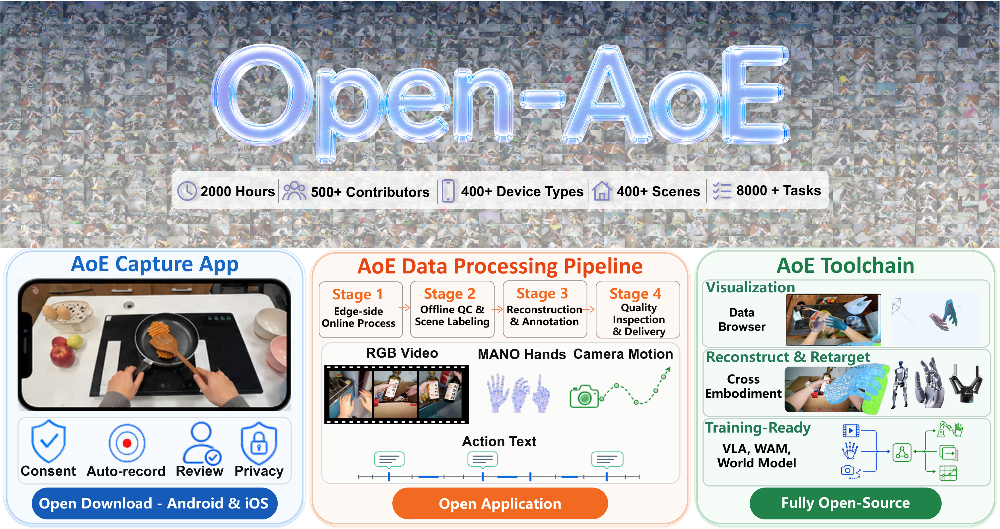
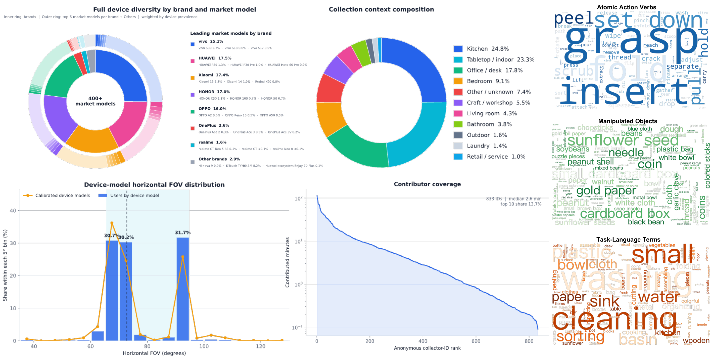
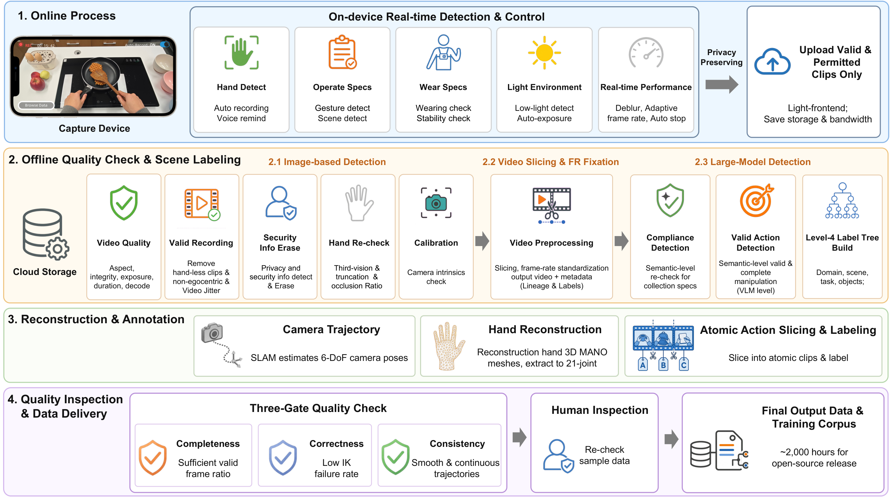
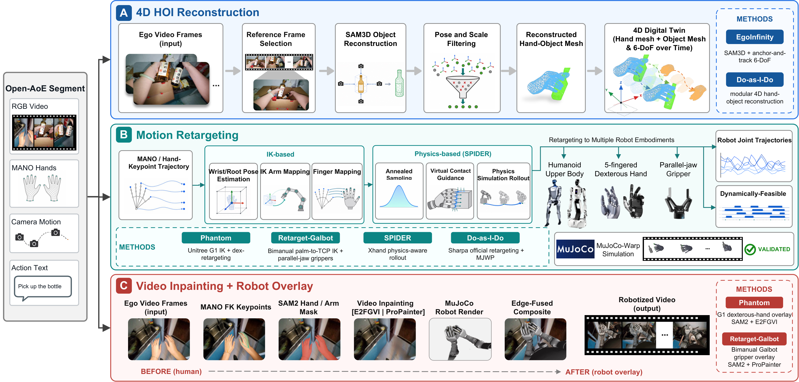
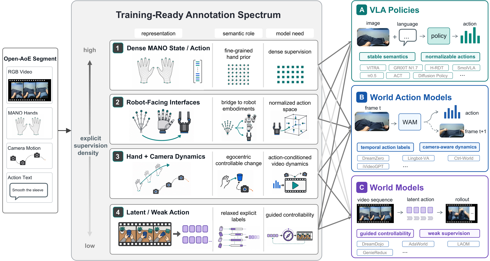
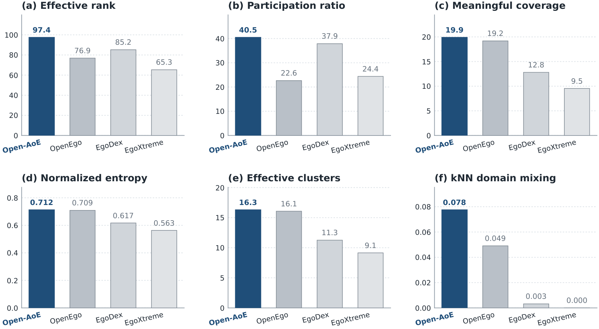
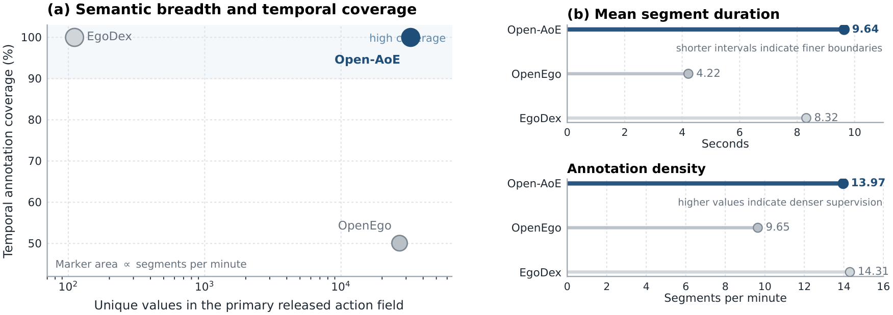
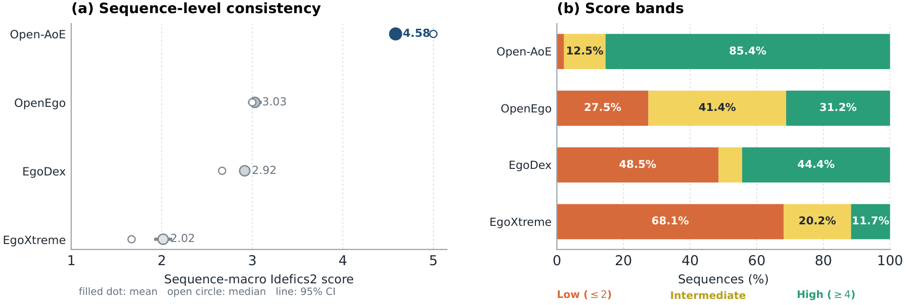
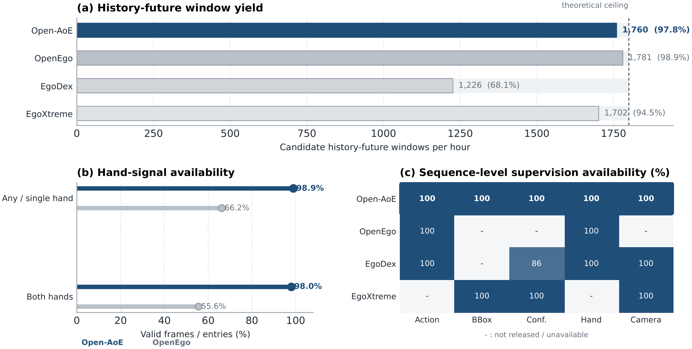

具身智能（Embodied Intelligence）的进展正越来越受限于真实世界交互数据的规模和质量。与语言模型可以从互联网文本中学习不同，机器人学习需要物理世界中的演示数据：这些数据不仅要大规模、多样化，还需要在几何、时间与语义三个维度上具有结构化标注，才能用于模型训练。
然而，现有的第一人称（egocentric）数据集面临一个两难困境：高质量数据集依赖专用头戴设备或AR/VR硬件，采集门槛高、规模受限；大规模被动视频容易获取，但缺乏手部运动、相机轨迹、动作边界等结构化信息，无法直接用于机器人训练。
蚂蚁集团（Ant Digital Technologies）联合浙江大学、香港大学、新加坡国立大学、北京航空航天大学等多家机构，提出了Open-AoE：一个开放、社区驱动的第一人称操作数据集与工具链，打通从智能手机拍摄到模型训练的全链路。
第一人称视频是解决这一问题的自然模态。从操作者的视角录制，同一画面中同时包含手、物体、场景和动作进展，与机器人执行的感知结构最为接近。与机器人遥操作相比，它在日常环境中可以更自然、更连续、更低成本地采集。
现有数据集沿不同方向推进了这一领域：Ego4D提供大规模日常活动覆盖（3,670小时），EPIC-KITCHENS聚焦厨房操作（100小时），EgoDex提供手部追踪与语言标注（829小时），EgoLive贡献了1,680小时的立体声服务场景录制，OpenEgo将6个公开数据集标准化为1,107小时的手部姿态与动作原语。
但一个核心缺口仍然存在：社区需要的不是更多的视频，而是可复用的数据基础设施：能够持续采集、系统化处理、直接支持模型训练。高质量数据集往往依赖专用硬件（头戴式设备、AR/VR），低成本采集的视频又缺乏手部运动、相机轨迹和动作边界等结构化信号。
Open-AoE正是为填补这一缺口而设计：基于AoE智能手机采集框架，首次将大规模消费级手机采集、完整的操作标注和「数据到模型」工具链统一在一个开源项目中。

Open-AoE首批发布约2,000小时的第一人称操作视频，全部由500+ 名贡献者在自然环境中使用400+ 种消费级智能手机拍摄完成。覆盖400+ 场景、8,000+ 任务，涵盖厨房、桌面、办公室、卧室、客厅、车间等各类日常环境。
数据集提供四层结构化标注：文本描述（英文）、MANO手部姿态、相机轨迹、时间定位的原子动作（atomic actions）。这些信号在同一时间线上对齐，构成「通用证据层」：下游研究者可以根据具体问题选择合适表征层次，而非被强行绑定到一种训练格式。
在设备多样性方面，Open-AoE覆盖了消费级手机市场最广泛的品牌和型号。嵌套环图展示了品牌构成（内圈）和主流型号（外圈），水平视场角（FOV）分布呈多峰模式：集中在65°–75° 和90°–95° 两个区间，反映了不同相机和镜头配置的固有差异。这种传感器域的自然多样性，可能提高模型迁移到未知相机和机器人视角时的鲁棒性。
Open-AoE的差异化不仅在于规模，更在于三个层面的耦合多样性：操作什么（物体多样性）、在哪操作（场景多样性）、通过什么观察（设备多样性）。这些特性共同为跨域操作学习提供了更坚实的视觉基础。

Open-AoE的数据处理流水线是整套基础设施的核心，将原始手机视频逐步转化为结构化训练样本。流水线分为四个阶段：端侧在线检测、离线质量检查与场景标注、重建与标注、质量检测与数据交付。
端侧在线检测：在拍摄设备上，轻量级视觉模型实时控制录制质量。手部可见性检测在双手出现时自动开始录制、离开画面时停止，当手部靠近画面边缘时通过语音提示用户调整。同时监测操作合规性（非标准动作检测）和佩戴合规性（佩戴姿势与稳定性检测），实时反馈。暗光环境下自动开启补光灯和全局曝光适应。
离线质量检查与场景标注：第一道门控基于规则检测器，并行检查画面比例、文件完整性、过曝/欠曝、时长不足等常见缺陷。有效录制检查去除无手画面和非第一人称视角。安全信息擦除对面部等敏感内容进行像素化处理，并替换元数据中的个人身份信息。手部复核确保双手清晰可见，最后验证相机内参的完整性和有效性。
重建与标注：每段合格片段进入重建阶段：使用DROID-SLAM恢复6-DoF相机轨迹，针对手持和头戴式采集重新调优鲁棒内核；基于HaWoR重建3D MANO手部网格，通过滑动窗口优化保持时间一致性；最后通过全局光束法平差将手部网格与相机轨迹联合优化到同一世界坐标系。从恢复的网格中提取21关节手部关键点，并将视频分割为语义一致的原子动作片段，辅以人工审核修正模型幻觉。
质量检测与数据交付：通过三道门控：完整性门控（手部重建有效帧比例达标）、正确性门控（逆运动学失败率低）、一致性门控（相机轨迹平滑连续）。最终从完整数据池中精选约2,000小时用于开源发布。

Open-AoE不仅是一个数据集，更是一套完整的开源工具链，将时间对齐的第一人称视频、手部几何、相机运动和动作语义转化为可被检查、重建、重定向和用于学习的研究资产。
AoE-Visualization：可视化与错误诊断的入口。在未失真第一人称视频上叠加MANO网格、21关键点骨架、未来手腕轨迹和原子动作标签，同时呈现世界坐标系3D视图和时间线。这种联合视图能让研究者在下游模型将错误吸收为「表观运动规律」之前，就发现重投影误差、手部缺失、SLAM漂移和语义边界错位。
AoE-Reconstruct-Retarget：连接第一人称观察到三种互补输出：4D手-物资产、机器人可执行轨迹和机器人化视频。EgoInfinity和Do-as-I-Do将单目视频提升为时变手部几何与物体交互资产；多个重定向后端支持G1、Galbot/Galaxea、Sharpa和XHand等机器人平台；机器人化视频将模拟机器人合成到原始第一人称场景中，保留真实环境、物体、光照和任务进度。
AoE-Training-Ready：将同一组对齐信号适配到不同模型的特定动作语义。110D密集MANO表征、48D手腕-指尖表征、62D/SHARPA关节表征、20D GR00T夹爪表征等，分别对应VLA策略、World Action Models和World Models的不同需求。原子动作语言提供任务意图，逐帧手部几何提供动作实现，双手轨迹提供协调结构。


论文将Open-AoE与OpenEgo、EgoDex、EgoXtreme等现有数据集在四个维度进行了系统对比，使用100小时随机采样进行公平比较。
高维视觉多样性：使用CLIP图像嵌入评估视觉特征分布。在3,000次平衡随机试验中，Open-AoE在全部六项指标上取得最高均值：有效秩（Effective Rank）97.43、参与比（Participation Ratio）40.47、有意义覆盖（Meaningful Coverage）19.89、归一化聚类熵0.712、有效聚类16.29、kNN域混合0.0775。其中有效秩和kNN域混合的优势最为显著，说明Open-AoE在覆盖更多活跃特征方向的同时，与其他视觉域保持了更强的局部连通性。
语义广度与时间完整性：Open-AoE的主要动作标注字段包含32,407个独特的自然语言描述，远超OpenEgo的26,864个和EgoDex的111个分类标签。此外还包含8,030个物体字符串、175个动作动词和135个场景标签。标注覆盖99.99% 的时间线，远超OpenEgo的50.1%，同时保持13.97段/分钟的高标注密度。
图像-标注一致性：使用Idefics2视觉语言模型评估标注与视觉内容的一致性。Open-AoE的序列宏评分达到4.583/5，远超OpenEgo（3.029）、EgoDex（2.916）和EgoXtreme（2.015）。85.4% 的序列获得 ≥4分，仅2.2% 低于2分。
训练窗口保留率：评估序列转换为固定上下文训练样本的效率。Open-AoE每小时产出约1,760个候选历史-未来窗口，达到理论上限的97.8%。98.93% 的条目包含至少一只有效手部信号，98.02% 包含双手有效信号。是唯一在全部五种监督模态（动作标注、边界框、标注置信度、手部姿态、相机姿态）上均达到近乎全覆盖的发布数据集。




参考：https://arxiv.org/abs/2607.14183